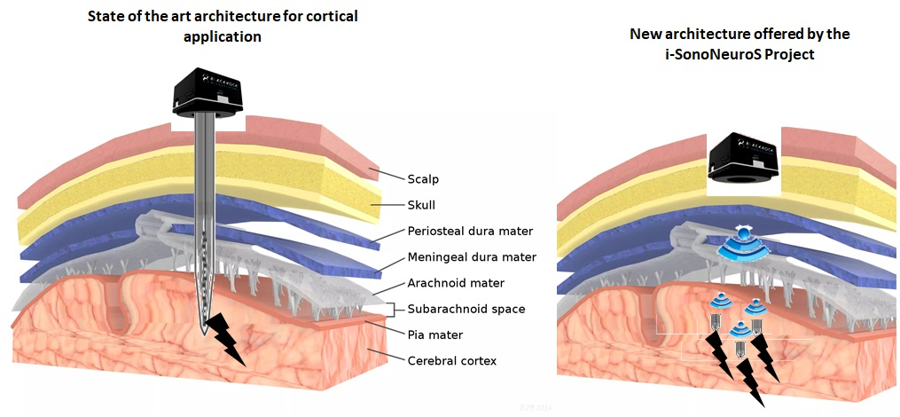

Neurotech-lab
WNI Lab
LinkedIn
ResearchGate
ORCID
Neurotech-lab
WNI Lab
LinkedIn
ResearchGate
ORCID
Marie Skłodowska-Curie Postdoctoral Fellowship-
SonoNeuroS
Tittle: "Wireless UltraSound Powered Diamond based Neural Stimulators.(SonoNeuroS)

Project: SonoNeuroS (link), aims at developing wireless and battery free ultrasound-based stimulators based on Piezoelectric Micro-Machined Ultrasonic Transducer (p-MUT) technology. A Neural stimulator will be tested after development to analyze the effect of electrical stimulation on the output of retinal ganglion cell. Project lead by Dr. Sahil Sharma, Marie Skłodowska-Curie Postdoctoral European Fellow, Ultrasound Instrumentation and Biosensors Researcher, under the supervisor of Dr. Clement Hebert and Dr.Homaira Nawabi's "Central nervous system: from development to regeneration" team. Additionally, during a 6-month secondment training at ESYCOM Paris under the supervision of Dr. Lionel Rousseau, design wiil focus on fabrication of Piezoelectric Micro-Machined Ultrasonic Transducer (p-MUT) technology-based neural implants..
Wireless Neural Implants " Team at Grenoble Institute of Neurosciences, INSERM U1216, France
Objectives
Marie Curie Postdoctoral European Fellowship (European Commission), Grenoble Institute of Neurosciences
Project title:"ultrasound-based neuro-stimulation for neural regeneration" (Acronym: SonoNeuroS)
Jan 2023 - Present
- Designed neural recording instrumentation setup for PMUT connected with a microelectrode array.
- Training in microelectrode array design and PMUT fabrication in a cleanroom.
- Study of bio-design setup of cell-culture under the microscope, handling PMUTs.
Sahil Sharma (Marie curie postdoctoral Fellow) PhD in Physical Sciences (Instrumentation, Electronics) - CSIR-National Physical Laboratory, Academy of Scientific and Innovative Research, New Delhi, India - Aug 2015 - Aug 2020
Thesis: "Design, Development and Analysis of Instrumentation for Ultrasonic Characterization of Liquids"
Advisor: Dr. PK Dubey Senior Principal Scientist, CSIR_NPL,India
Clement Hebert (Supervisor, Team Lead)
Details To be added soon
Publications
- Under process